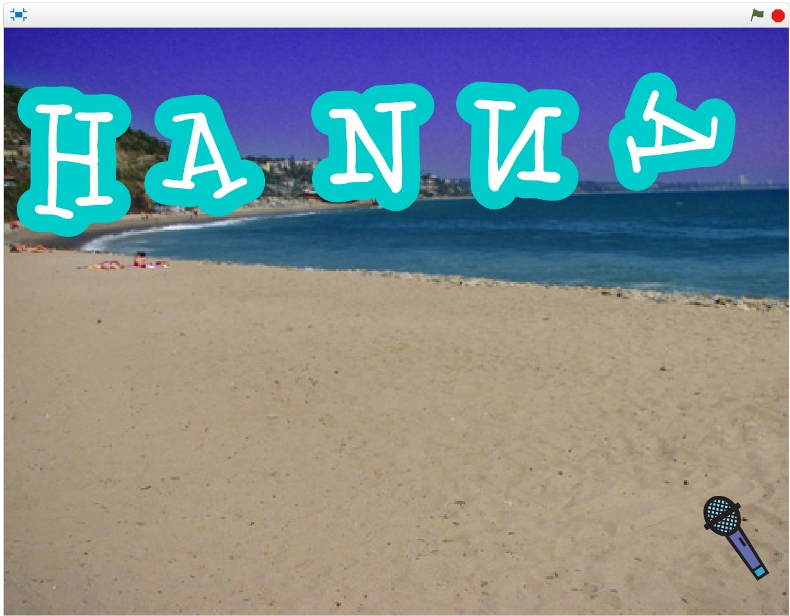
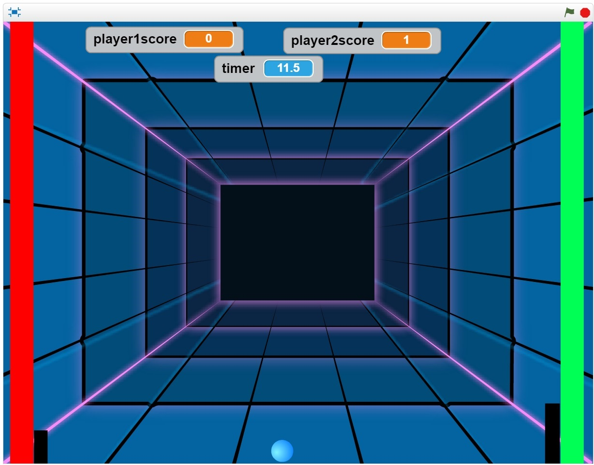

Name Assignment

Description:
Use scratch to design and create a program that shows my name. The requirements were to add a sprite for each letter in my name and give them 3 unique behaviors. The program needed to run when the green flag was clicked and for extra credit I added a function to eset the scene to the beginning each time the green flag was clicked.
Concepts Learned:
- Using event blocks- green flag clicked, when key pressed
- Conditional statements- used if statements to control when and when things happen
- Used loops- I used a forever block to continue the cycle of the letters moving, I used the repeal until block to stop the movement on command.
- Sprites- I created my own sprites using the sprite editor, I used the library of sprites to find letters in my name and adjusted the costumes, in order to make it look more aesthetic.
- Movement- I used the x and y values to make my sprites move to their original location when the green flag was clicked I rotated the sprites to different locations using the directions of coordinates as my guide.
Computer Buying Project
Description:
We used scratch in order to make a presentation in order to compare computer and demonstrate the pros and cons of them in order to fit a person's certain needs. The goal of the project was to pick a computer based the needs of the person that we interviewed . The entire presentation had to be made of scratch and compare the 4 computers and the pros and cons of each.
Concepts Learned:
- Green flag- I used the green flag to switch costumes and summon other sprites
- Broadcast- I used broadcast to put sprites in motion, activate words, bringing in of new sprites, increase Sprite size, and to move a Sprite in certain ways.
- Repeat/ if statements- I used the repeat and if statements to continue programming and to stop it if another event occurs.
Final Scratch Project

Description:
We used scratch to combine all of the skills that we used into one game or story that exemplifies all of the scratch programming we have picked up. I made a pong game using different programming variables along with control variables, data variables, etc. This game was designed to serve as a real life pig game where if you hit the edge you get a point and once you receive a certain amount of points you win. Out of all three levels whoever won two games of five points first would win.
Concepts Learned:
- I used the data variables to show what score the players had.
- I used score you keep track of the score of each player.
- I used timer to keep track of how long the game has been going on.
- I used the green flag to reset each level.
- I used broadcast to broadcast the background to change between each level.